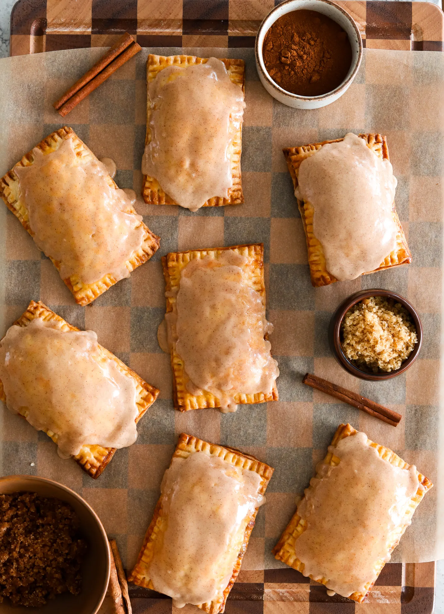

Breakfast
Dippy Eggs and Soldiers
Dippy eggs and soldiers are a classic British breakfast that may seem like just eggs and toast, but the experience is completely different. Soft, creamy yolks meet thin, buttery toast strips for dipping, creating a breakfast that’s comforting and satisfying. This recipe shows you exactly how to get the eggs and toast just right every time.
You Might Also Like

French Styled Mashed Potatoes

French Tacos (But Not Really Tscos)
